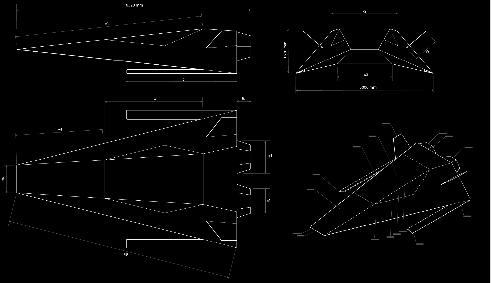
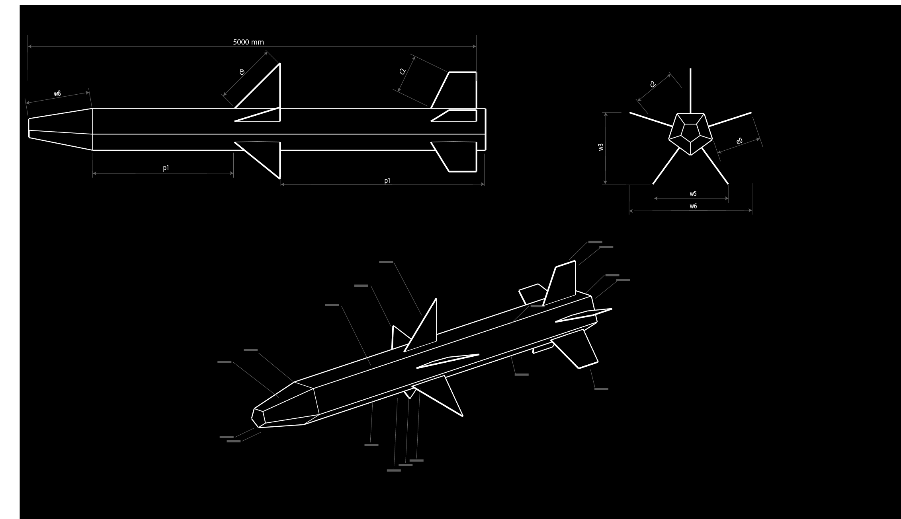

The EXO-57 Striker
The EXO-57 Striker is a twin fusion-engined planetary interdictor designed for air superiority and close air support operations.
Unlike conventional space interceptors, the EXO-57 is purpose-built for combat within a planet's atmosphere and gravitational field. Its combination of extreme manoeuvrability, advanced defensive shielding and formidable armament makes it particularly effective in the demanding environment of low-altitude planetary warfare.
Designed to operate independently or in direct support of ground forces, the EXO-57 is a key component of humanity's Foothold Doctrine.
Development
Humanity's early military encounters with the C'tarr-ni exposed the inadequacy of conventional weapons and tactics against a technologically superior enemy.
Numerous defensive strategies were attempted, with varying degrees of success. Experience eventually demonstrated that well-fortified ground forces offered the best prospects for survival.
However, even the strongest ground defences remained vulnerable to attack from the air.
Effective air support was essential.
Developing aircraft capable of providing that support presented enormous challenges. The limitations of quantum transmission severely restricted the size and complexity of equipment that could be transported to distant worlds.
Numerous modular fighter and gunship designs were developed, each intended to be transported in components and assembled at remote military installations.
None proved entirely satisfactory.
Some lacked the firepower necessary to penetrate C'tarr-ni shielding. Others sacrificed manoeuvrability or defensive capability to meet the constraints of interstellar deployment.
The EXO-57 programme adopted a fundamentally different approach.
Rather than adapting an existing spacecraft design, engineers began with the propulsion and weapons systems required to defeat known C'tarr-ni combat platforms.
The aircraft was designed around two powerful Graff vectoring fusion torch engines, a rapid-firing pulse-coupled laser cannon and advanced plasma missiles.
Its compact airframe, defensive shielding and flight control systems were then developed to exploit the extraordinary capabilities of those systems while remaining compatible with modular construction and interstellar deployment.
The result was the EXO-57 Striker.
Initial evaluations suggested that the aircraft possessed greater combat capability than any known C'tarr-ni weapon platform operating on distant worlds.
Operational experience has since demonstrated that, in the hands of a well-trained pilot, the EXO-57 is capable of engaging and defeating multiple enemy aircraft while providing effective protection for friendly ground forces.
The EXO-57 is now regarded as the most promising development in the campaign to establish permanent military footholds beyond C'tarr-ni territory.
For the first time since the destruction of New Dawn, humanity possesses a weapon capable of challenging the C'tarr-ni's technological superiority.
Specifications
Length: 8.520 metres
Crew: 1 pilot, with accommodation for 2 additional passengers
Mass (empty): 9,310 kg
Mass (gross): 10,070 kg
Powerplant: 2 × Graff A33 vectoring fusion torch engines
Armament (primary): Avro LT030 Pulse-coupled laser cannon
Armament (secondary): Avro "Griffin" N-117A Plasma missiles
Defensive systems: Magnetically contained plasma shielding

Powerplant
The EXO-57 is powered by two Graff A33 vectoring fusion torch engines, each capable of generating more than 1,000 kN of thrust.
Each engine incorporates a primary propulsion thruster and four independently controlled directional thrusters, providing exceptional manoeuvrability across all axes.
Unlike conventional atmospheric aircraft, the EXO-57 does not rely on aerodynamic lift or control surfaces. Its flight characteristics are governed almost entirely by vectored thrust, allowing it to hover, accelerate rapidly, change direction and engage targets while maintaining precise control of its position and orientation.
This capability is particularly valuable during close air support operations, where the aircraft must manoeuvre around terrain and friendly ground forces while engaging rapidly moving targets.
Armament
Pulse-Coupled Laser Cannon
The EXO-57's primary weapons are two Avro LT030 rapid-firing pulse-coupled laser cannons.
Each shot delivers an intense, short-duration laser pulse capable of ablating armour and damaging exposed systems.
The laser is fired through a micro-injected xenon tracer medium. While the primary beam strikes its target at the speed of light, the superheated plasma wake travels downrange as a highly visible bolt.
This allows pilots to observe their firing trajectories and make rapid aiming corrections during high-speed engagements.
The cannon is particularly effective against lightly armoured ground targets and enemy aircraft.
Plasma Missiles
For heavily armoured targets and engagements beyond the effective range of its laser cannon, the EXO-57 carries Avro "Griffin" N-117A plasma missiles.

Each missile is propelled by a miniature fusion torch engine and carries a compact fusion-powered plasma warhead.
On impact or proximity detonation, a fusion charge drives a flux compression generator, producing an intense magnetic field that compresses and accelerates a metallic or gaseous liner into a concentrated jet of superheated plasma.
The resulting hypervelocity discharge delivers enormous destructive energy to the target.
Plasma missiles are particularly effective against heavily shielded aircraft, fortified ground installations and concentrations of enemy forces.
Defensive Shielding
The EXO-57 employs a magnetically contained plasma buffer as its primary defensive system.
Plasma shielding has been used in conventional space fighters for decades. However, the EXO-57 incorporates significant enhancements derived from the study of recovered C'tarr-ni artefacts.
These advances provide substantially improved protection against directed-energy weapons and high-energy plasma impacts.
The shielding system is designed to withstand repeated attacks while maintaining the aircraft's manoeuvrability and combat effectiveness.
Although exceptionally resilient, the shield has finite capacity. Sustained enemy fire can overwhelm its protective envelope, leaving the aircraft vulnerable to further damage.